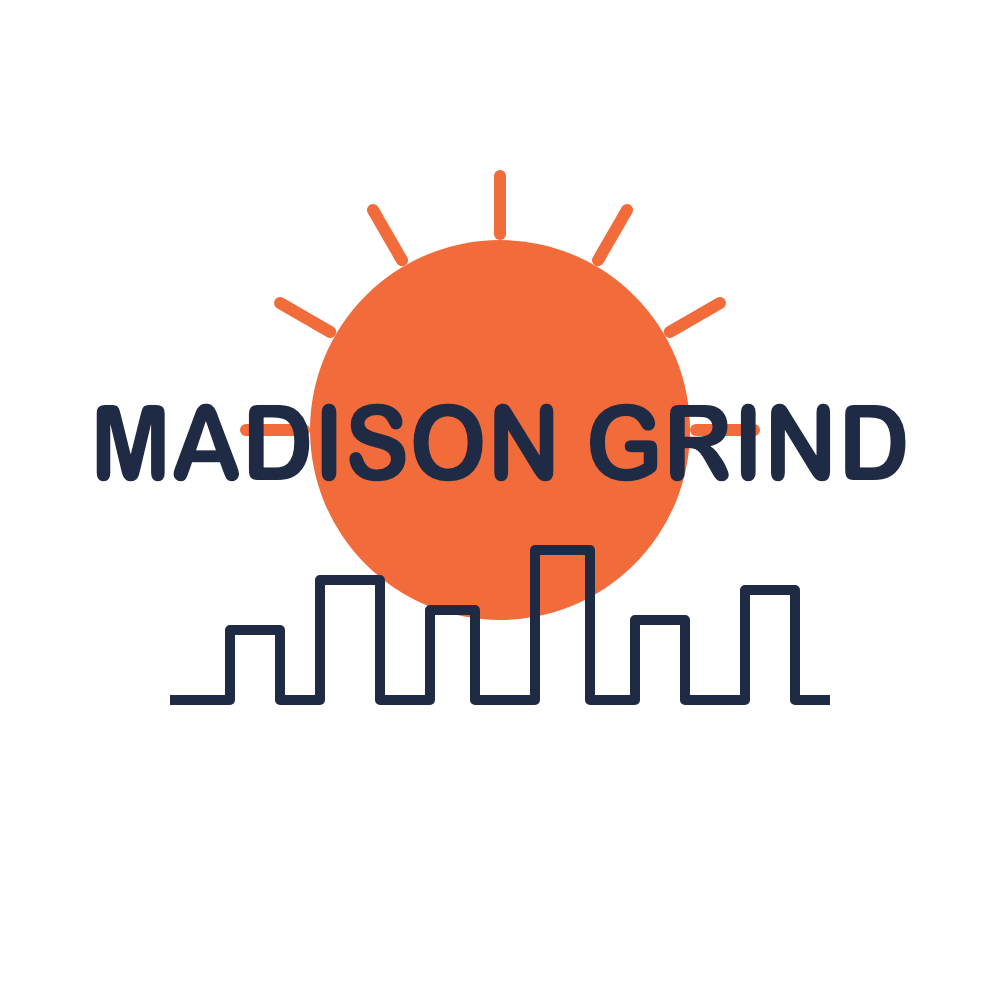
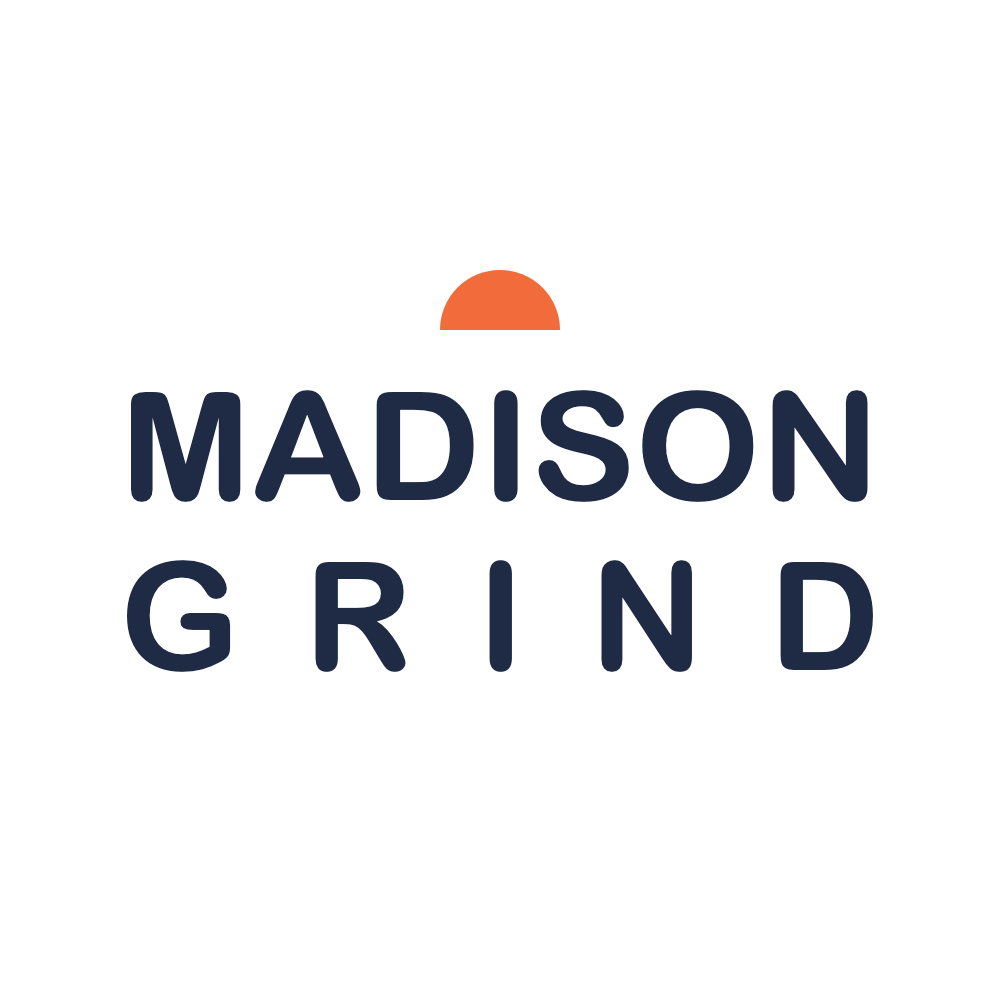
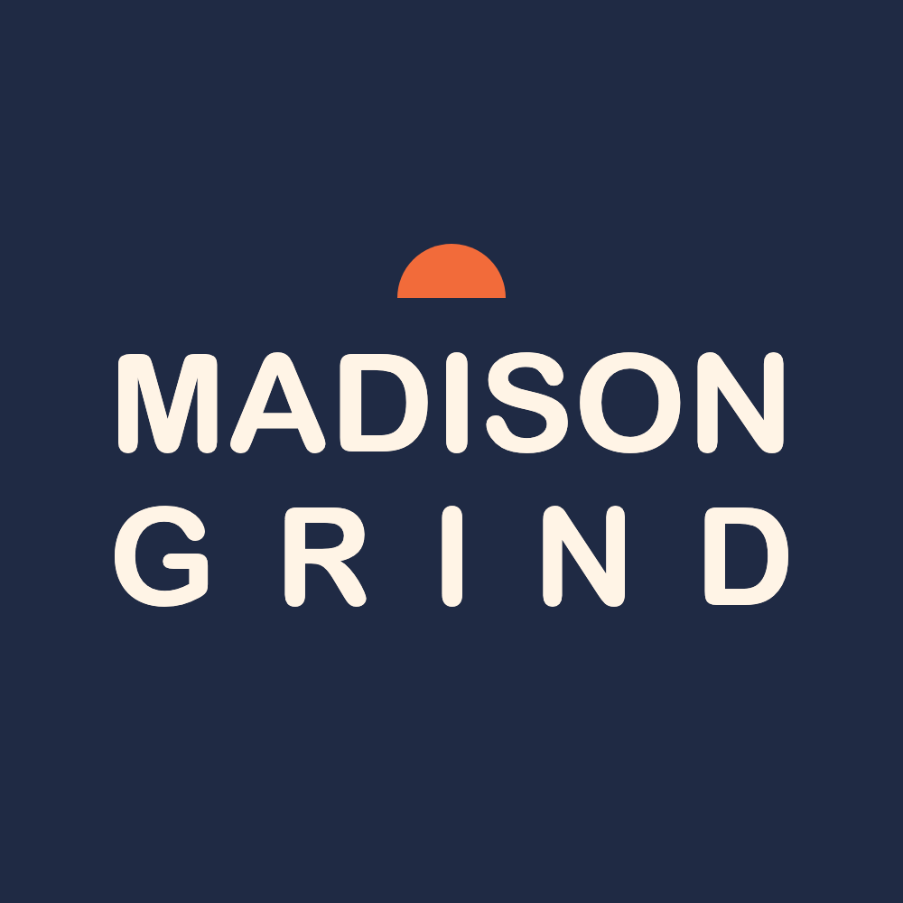
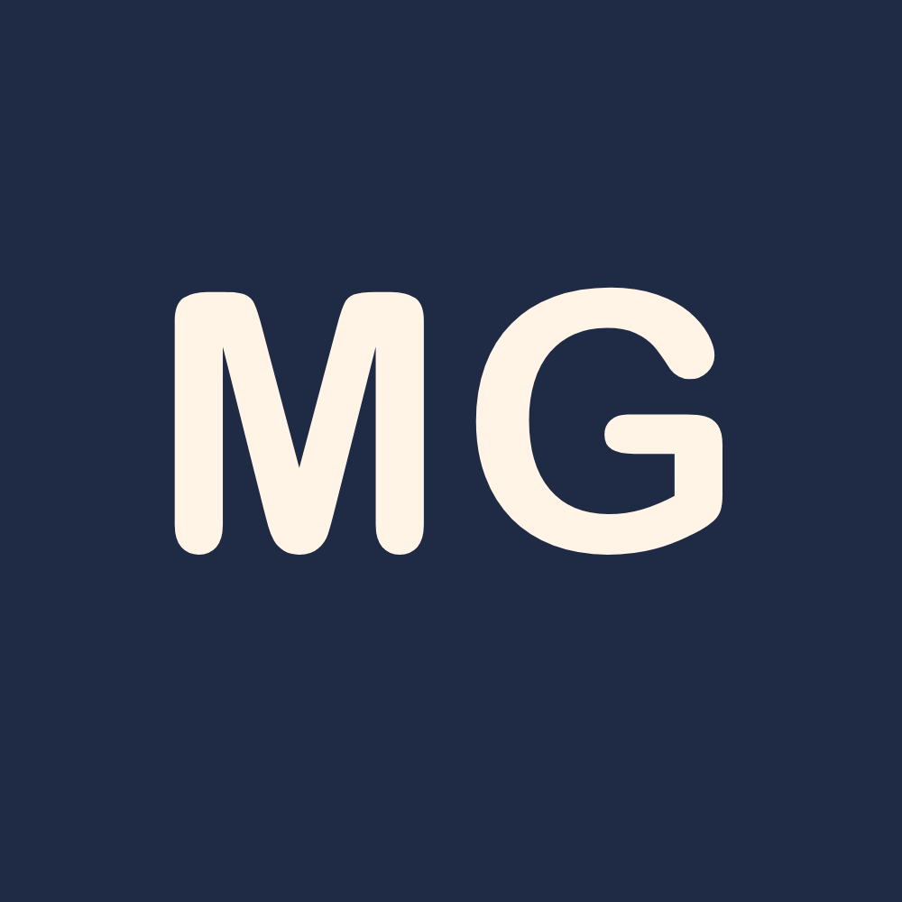
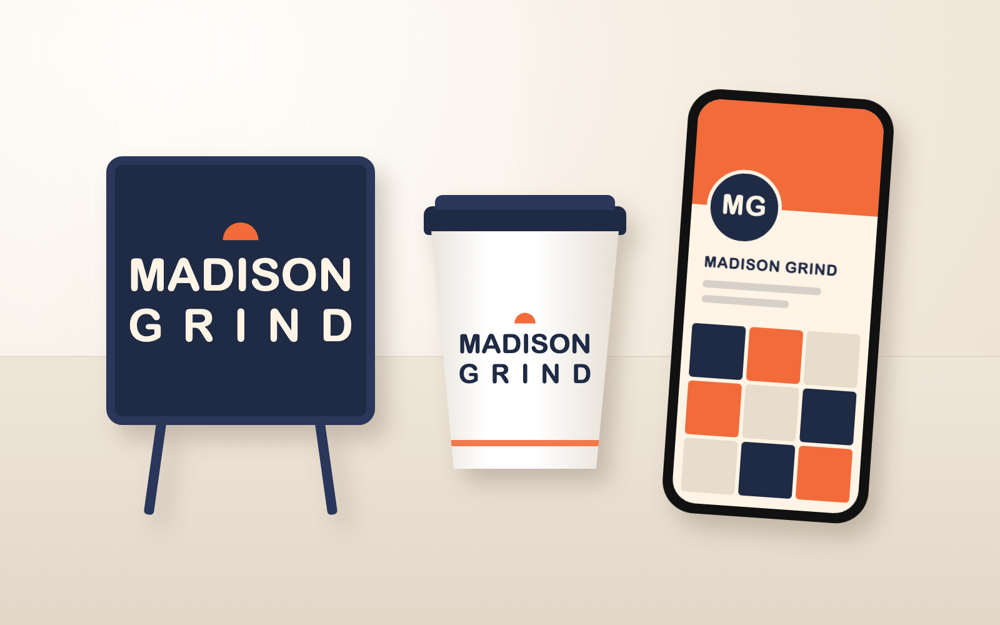

Stefan Mundow · Class 2: Talking to AI Like an Architect


I cut the rays and the skyline and moved the sun above the name, because the first version had three elements instead of two and the navy letters got lost on the orange when I shrank it to one inch.


The dark version is the same logo, only recolored, with the letters switched to Morning Cream so they stay readable on navy. For the icon I used MG instead of the half sun, because the sun alone could belong to any brand and MG still reads at half an inch.

My first mockup had beige squares on the phone that were not in my palette and a sign that was bigger than the cup, so I refined it to brand colors only and a smaller sign.